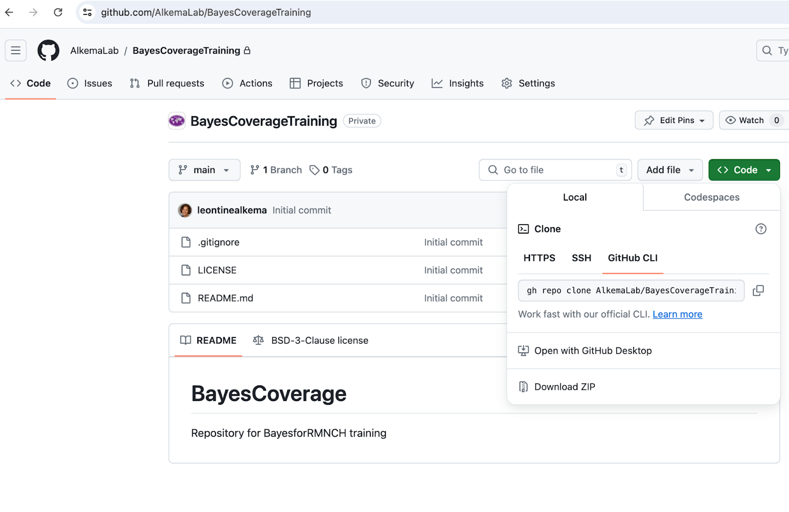
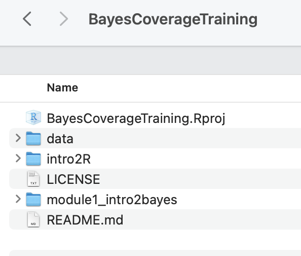

Overview
All code for this training will be made available in a public repository (repo) on Github: https://github.com/AlkemaLab/BayesCoverageTraining.
We will use the open-source software R for analyses and computations, through its user-friendly interface R-studio (https://posit.co/products/open-source/rstudio/). For model fitting, R packages and extensions are used such that all analyses take place in R. Analysis scripts will be provided for example analyses and discussed in recordings.
The remainder of this page contains resources for those of you new to R, and a workflow for non-Github users.
Note that this is a live document and will be updated as the training progresses. If you have a good resource to share, please let us know on the R slack channel!
Steps to get set up with R/R studio for new users
Step 1: Download and install R and Rstudio
Go to https://posit.co/download/rstudio-desktop/ and follow instructions to install R and Rstudio on your own computer (first install R, then R studio).
Step 2: Download the BayesCoverageTraining material from github
All code for this course will be made available in a public repository (repo) on Github: https://github.com/AlkemaLab/BayesCoverageTraining.
The text below introduces Github and a workflow for non-Github users. Participants who are familiar with github can ignore that workflow and work with the repository directly.
Instructions for those new to Github
Github refers to a hosting service for projects that use a version control system (git). Many programming projects, such as R packages, use Github repositories and the git version control system such that several people can work together and contribute to the project. Rstudio has nice functionality to work with and contribute to Github repositories. However, it requires some learning to get started with it. Hence, to avoid too much learning at once, we introduce a workflow that does not require any knowledge or experience with git(hub) for new users. If you are interested in learning more about git and github, some resources are provided below. We may come back to the use of github when doing collaborative analysis projects.
When downloading the code for the first time, take the following steps:
- Download the repo
Click on “Code” (green button), then “download zip”, see screenshot 1 below.

- Set up your local folder with your Rstudio project
Place the zipped downloaded file in a place where you can find it again: this directory will contain all your R code for the training
Unzip the downloaded file
Click on “BayesCoverageTraining.Rproj” to open your project in R studio, see screenshot 2.

Code updates/additions:
New modules will be added as the training progresses. To get the code in your local BayesCoverageTraining folder, you will need to download the new module and add it.
To do so, we recommend just downloading the entire repository again as per step A above, unzipping, and then selecting the folder that you want to move to your local BayesCoverageTraining folder. (But if you want, note that you can also download individual files (just click on the file you want, and then there is a download button [downwards arrow] in the top left).
Step 3: Open your BayesCoverageTraining R studio project and start working with the code for the module
As explained in Step 3, you will have a local directory with BayesCoverageTraining.Rproj in it. Click on that Rproj file to start working away (see recording for a quick intro).
We recommend always to start with opening the project file (to start an R studio session), as opposed to opening just the file you want to use, to have the right set up.
You can add additional files and edit the training files as you want. Just make sure to stick to the folder structure to avoid issues. If you are running into problems after editing a local copy of a file, you can always download a new one and start over.
Learning R
If you’re completely new to R, we recommend to consider one of gazillion great resources out there to get started in R and R studio. For module 1, we recommend learning a little about Rstudio and R markdown. We added some resources for this below. For later modules, learning about data wrangling (using dplyr), data visualization (using ggplot), and reading/writing data will be helpful. We will add information for this later on in the training.
Note on posit cloud computing: Some introductions to Rstudio use posit cloud services. While this works well to show how Rstudio works (without needing to worry about getting a local set up in order), our trials suggested that it’s not powerful enough for our exercises (fitting even a simple Bayesian model took a long time and resulted in some workspace crashes). So we will stick to using Rstudio locally.
Books on R and Rstudio
These books are all freely available online:
R for Data Science (first published in 2017, now on 2(+?) edition, content updated on website). Hadley Wickham and Garrett Grolemund. O’Reilly Media, Inc. https://r4ds.hadley.nz/
Statistical Inference via Data Science: A Modern Dive into R and the Tidyverse (2020). Chester Ismay and Albert Y. Kim. Chapman & Hall/CRC The R Series. https://moderndive.com
(short) courses with great reference material (perhaps some of it is a little outdated by now but intro material, ie on R, R studio, objects, markdown, dplyr basics is still relevant):
Other resources
This set is to-be-finalized based on what’s needed. Here are some for starters:
Great resource in terms of covering the main parts and being to the point.
- https://scubed.netlify.app/courses/1_intro_r_tidyverse/
- Please note that there is a self-paced version of the course I linked to, you just need to click on free materials https://introduction-r-tidyverse.netlify.app/
Site includes recordings on Rstudio, R markdown
…
For Stata users
Shared by Leonardo Ferreira: For those that are comfortable working with Stata but new to R, I have come across a few cheat sheets that try to translate Stata commands to R. Here is a post with several examples and a two-page cheat sheet in the end.
https://www.hertiecodingclub.com/learn/rstudio/stata_to_r/
Just good to keep in mind that the way R works is somewhat different from the way Stata does (in terms of structure, environment and objects). So not everything can be translated or thought as if we were coding in Stata.
Getting going with git(hub)
Some brief steps:
Get a github account
Recommended steps to get started using Rstudio build-in functionality:
Connect your Rstudio with github, here is an “how-to-set-it-up” explanation https://sites.northwestern.edu/researchcomputing/resources/using-git-and-github-with-r-rstudio
Consider an Rstudio-based workflow such as this one https://rfortherestofus.com/2021/02/how-to-use-git-github-with-r
Once you get going, you may want to learn more. This is a great book: https://happygitwithr.com/